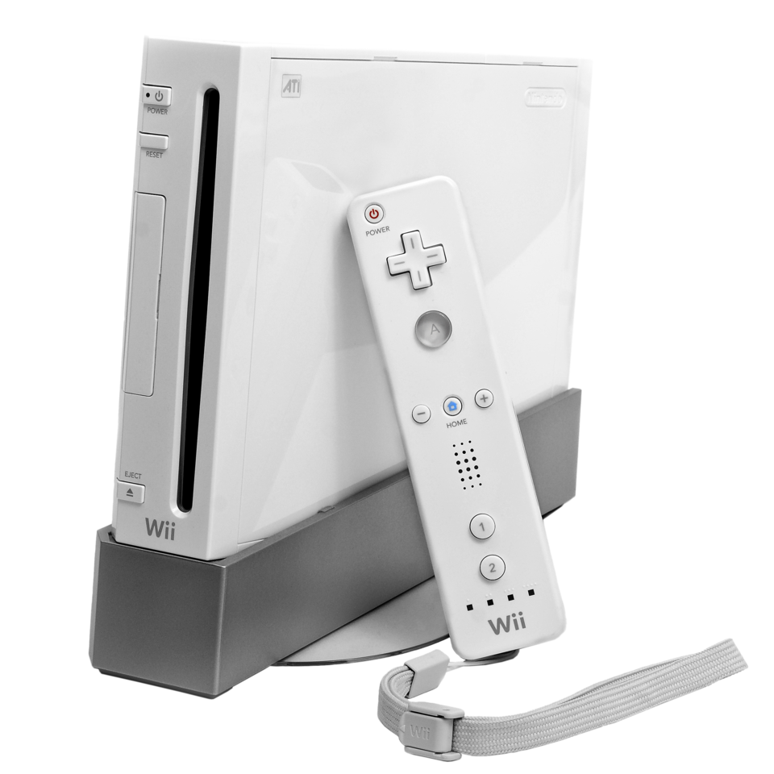

Nintendo Wii
Spēlētāja kustības kļūst par daļu no spēles vadības.
Wii spēlēs svarīgas kļuva arī spēlētāja kustības. Ar Wii Remote pulti varēja, piemēram, atdarināt tenisa raketes vēzienu.

Spēlētāja kustības kļūst par daļu no spēles vadības.
Wii spēlēs svarīgas kļuva arī spēlētāja kustības. Ar Wii Remote pulti varēja, piemēram, atdarināt tenisa raketes vēzienu.